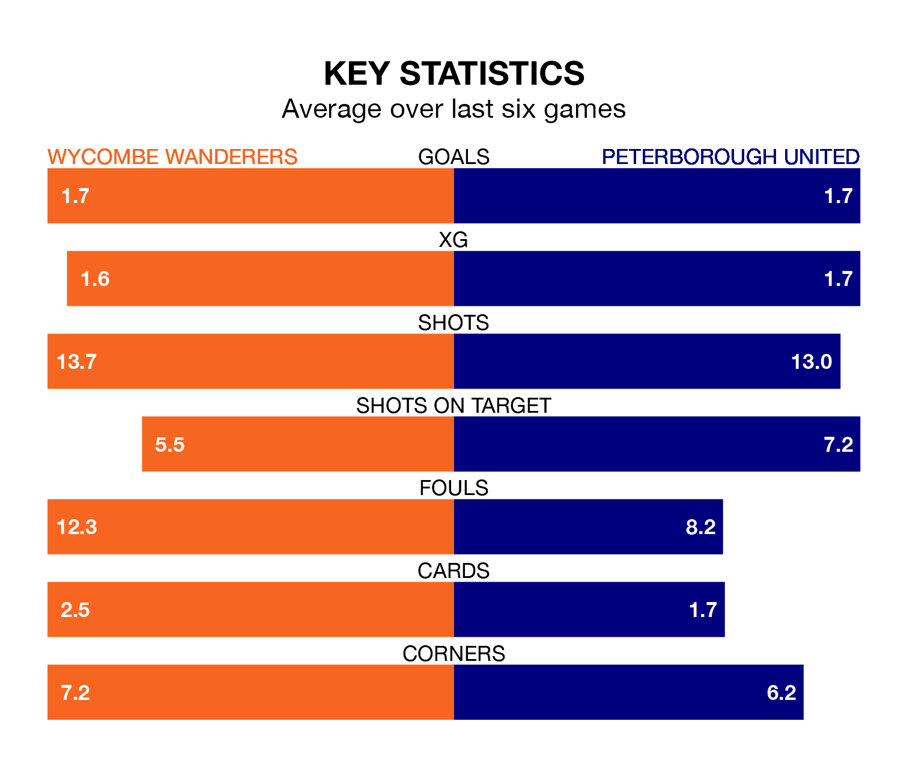

Peterborough United travel to Adams Park for Saturday's match against Wycombe Wanderers looking to bounce back from defeat last time out in EFL League One.
The Posh, who sit fourth in the league after 30 games, fell to a 2-1 away defeat to Exeter City on Tuesday.
They face a Wycombe side who picked up a win in their last match, a 3-1 victory against Cheltenham Town, and who sit 17th in the table.
With 57 goals in 30 games so far this season, Peterborough are the league's highest scorers with 1.9 goals per game. And they are conceding fewer than average, letting in 34 goals at a rate of 1.1 per game.
Wycombe, meanwhile, are below average scorers, with 1.2 goals per game, compared to a league average of 1.3. They have conceded 1.3 goals per game.
In the last 10 years, Wycombe and Peterborough have played each other on eight occasions. Wycombe won three of them, Peterborough two, and they drew three times.
On average, the Chairboys scored 1.9 goals and the Posh 1.9 in those matches.
Their last meeting was on October 21, when they played out a 2-2 draw.
With Nicholas Bilokapic between the sticks, United can rely on one of the league's safest pair of hands. He has kept 10 clean sheets in his 26 appearances this season in EFL League One.
In Wanderers' net, Maksymilian Stryjek has six clean sheets in 29 games.
The Chairboys are in mixed form in EFL League One, with two wins and three draws from their last six games.
With three wins and a draw over that period, the Posh's form is slightly better – they have taken 10 points from 18, compared to the hosts' nine.
Updated: 11:43 (UTC), 08/02/24